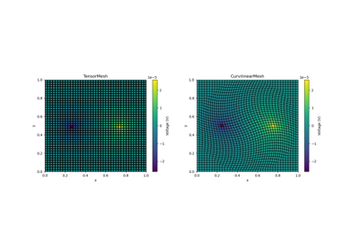
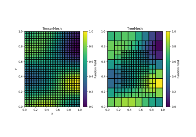

Examples# Operators: Cahn Hilliard Operators: Cahn Hilliard Plot Mirrored Cylindrically Symmetric Model Plot Mirrored Cylindrically Symmetric Model  Basic Forward 2D DC Resistivity Basic Forward 2D DC Resistivity  Basic: PlotImage Basic: PlotImage 3D Visualization with PyVista 3D Visualization with PyVista QuadTree: FaceDiv QuadTree: FaceDiv QuadTree: Hanging Nodes QuadTree: Hanging Nodes Slicer demo Slicer demo Plotting: Streamline thickness Plotting: Streamline thickness Gallery generated by Sphinx-Gallery